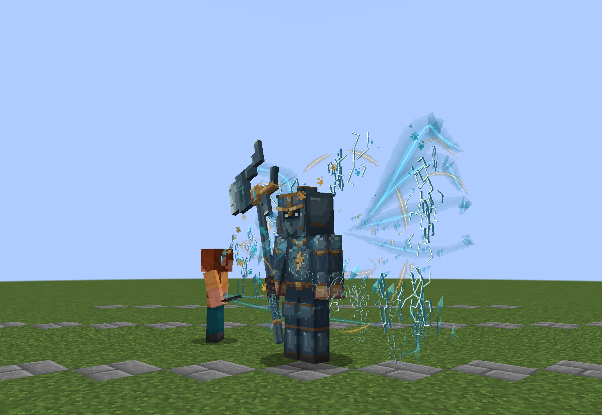
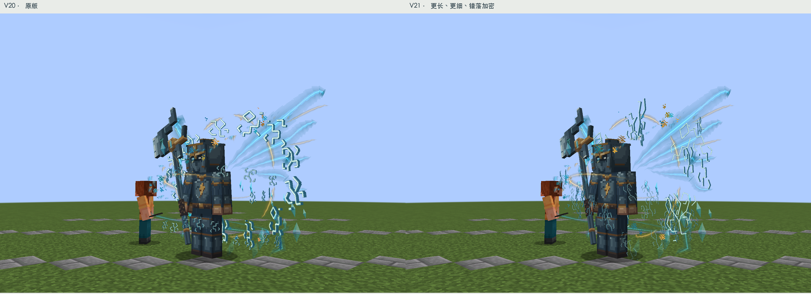
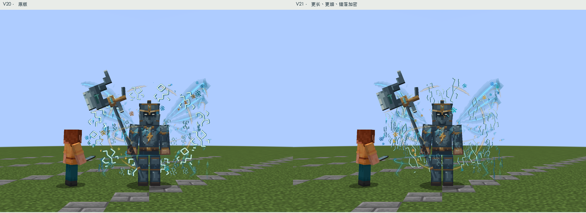
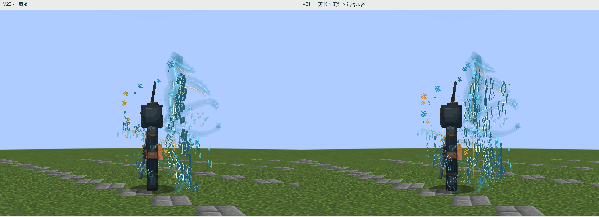
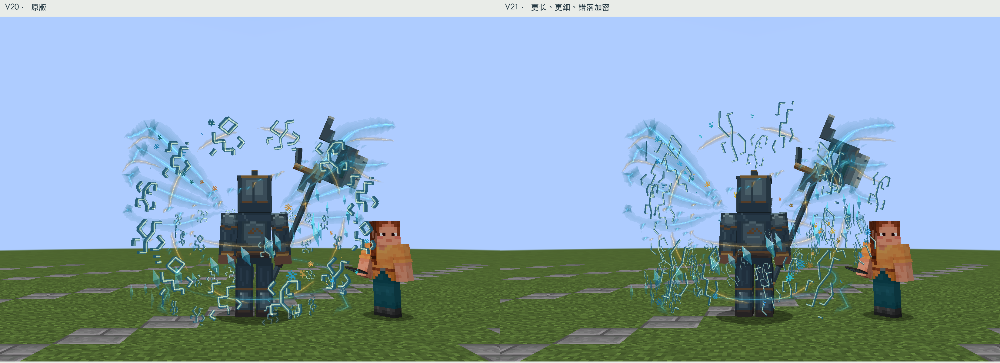
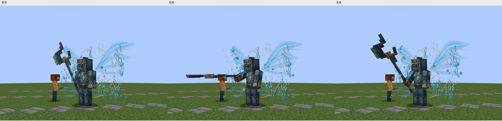
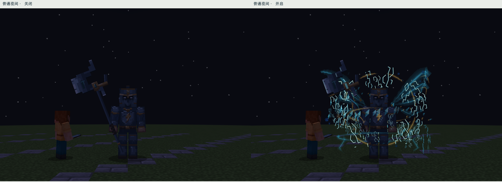
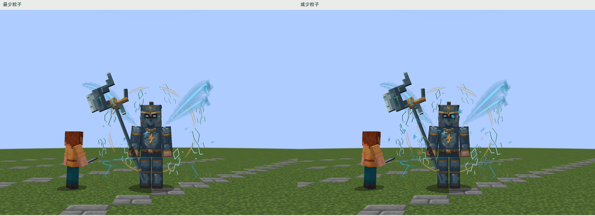

天将 · 细长错落符文 V21
本轮只改符文：笔画宽度约减半，形状收窄拉长；主符印12→18枚，环绕碎符24→48枚。高度、距离、倾斜角错开，避免整齐排成一圈。保留脸部前方视线和原有晶片光屑，身体、头部、武器与动作均不改。

24帧无声实机采样，4.8秒循环。
左V20、右V21；同8米、同FOV70、同光照与裁切。
正面同机位对照
侧面同机位对照
背面同机位对照
原有攻击：蓄势、接触、恢复
普通夜间，无后期提亮
粒子数量设置的简化表现构建通过（跳过通用测试）；19个受控实机状态通过。已核对运行资源与模型、贴图、动画哈希。自然战斗、多人性能和第三方光影仍待验证。仅改天将，其他Boss等待验收。
验证记录 · 实机记录 · 沿用的参考记录